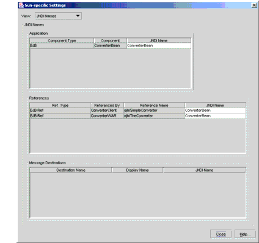

Mapping the Enterprise Bean References
Although the application client and the web client access the same enterprise bean, their code refers to the bean's home by different names. The application client refers to the bean's home as
ejb/SimpleConverter, but the web client refers to it asejb/TheConverter. These references are in the parameters of thelookupcalls. For thelookupmethod to retrieve the home object, you must map the references in the code to the enterprise bean's JNDI name. Although this mapping adds a level of indirection, it decouples the clients from the beans, making it easier to assemble applications from J2EE components.To map the enterprise bean references in the clients to the JNDI name of the bean, follow these steps.
Figure 24-1 shows what the JNDI Names tab should look like after you've performed the preceding steps.

All of the material in The J2EE(TM) 1.4 Tutorial is copyright-protected and may not be published in other works without express written permission from Sun Microsystems.